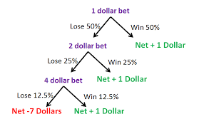

The basic form of the Gambler’s Ruin Problem involves two players, A and B, engaged in a probabilistic game. In each round, there's a probability p (where 0 < p < 1) that A will win against B, and the complementary probability (1 - p) that B will win. Both players start with initial wealth (A with i, and B with k - i, where k is the total wealth). Wealth is always positive, and the game continues indefinitely until one player loses their entire initial wealth and can no longer play.
Consider A's initial wealth, i, as an integer dollar amount, and each game is played for one dollar. A must play at least i games to reduce their wealth to zero. If the game is fair (p = 1/2), A has a 50-50 chance in each round. If p > 1/2, A has a systematic advantage; if p < 1/2, A has a disadvantage. The possible outcomes are either A ending with k dollars (B losing all money) or A ending with 0 dollars (B having all the wealth).
The key analysis focuses on determining the probability of A ending with k dollars rather than 0 dollars. In any case, one of the players will face financial ruin, giving rise to the name Gambler’s Ruin.

Solution
Our goal is to ascertain the probability, denoted as aᵢ, that gambler A will conclude with k dollars, given an initial wealth of i dollars, assuming all games are identical and independent. Each game represents a new iteration of the Gambler’s Ruin problem, with differing initial wealth based on the outcome of the previous game.
Mathematically, we can envision each sequence of games leading to gambler A having j dollars (where j ranges from 0 to k). The probability of A winning in a specific sequence is denoted as aⱼ. If A ends with k dollars, aₖ equals 1; if A ends with 0 dollars, a₀ is 0. Our focus is on determining probabilities for all values of i from 1 to k - 1.
Notation: A₁ signifies A winning game 1, while B₁ denotes B winning. The event W represents A ending with k dollars before hitting 0. The probability of this event, P(W), is determined using conditional probability properties.
The probability of A winning, P(W), given an initial wealth of i dollars, is represented by aᵢ.
If A gains a dollar in the first game, their wealth becomes i+1; if they lose a dollar, it's i-1. The probability of winning the entire sequence hinges on whether A won the first game. This logic translates into an equation that relates the probability of winning one dollar each game, p, and the conditional probabilities of winning the sequence given the gambler's wealth.
\(a_i = pa_{i+1} + (1 - p)a_{i-1}\)
Gambler A's wealth ranges from the total initial wealth of both players to zero. For i=1 to k - 1, we can plug in values to generate k - 1 equations. Algebraic manipulation condenses these equations into a standardized format, providing a fundamental relation between the winning probability, p, total initial wealth, k, and the probability of winning with one dollar, a₁. Solving for a₁ enables iterative determination of aᵢ for all possible i values.
Now, let's consider two scenarios: a fair game (p=1/2) and an unfair game (p≠1/2). In a fair game, the equation simplifies to 1 - a₁ = (k - 1)a₁, rearranging to a₁ = 1/k. This elegant result reveals that, in a fair game, the probability of A ending with k dollars before zero is i/k, where i is the initial wealth.
\(a_i = \frac{i}{k}\) for \(i = 1, \ldots, k-1\)
For an unfair game (p≠1/2), a general solution emerges, dependent on p and wealth parameters. The approach provides a systematic understanding of the Gambler’s Ruin Problem, unraveling the probabilities under different game conditions.
In the context of the homework 6, we can apply the Gambler's Ruin Problem to model the probability of a system being discarded before reaching a security score (S) or before reaching a penetration score (P). Each system undergoes a series of attacks, and the outcome of each attack determines whether the system's security score increases or decreases.